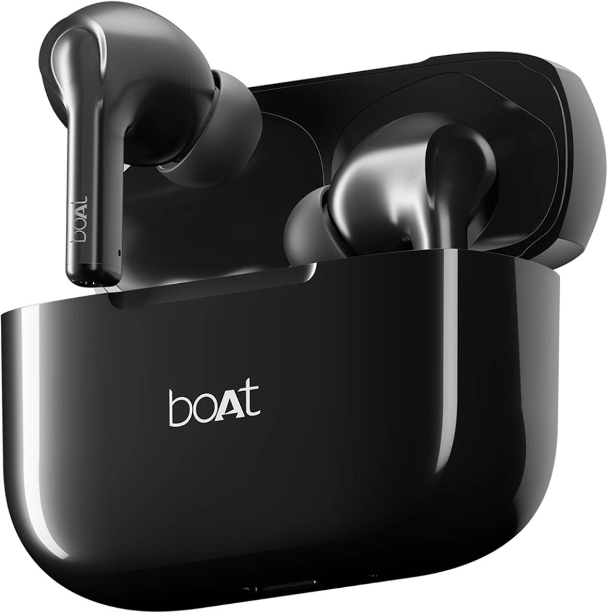
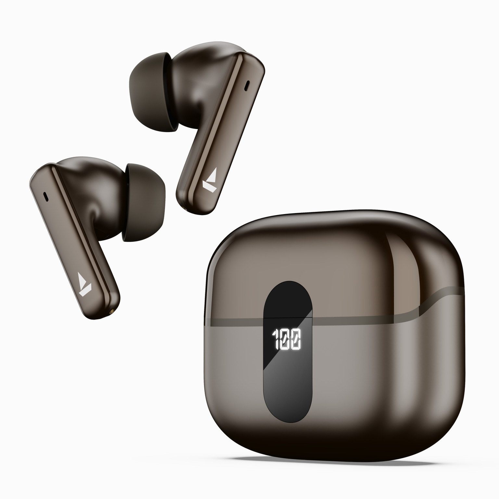
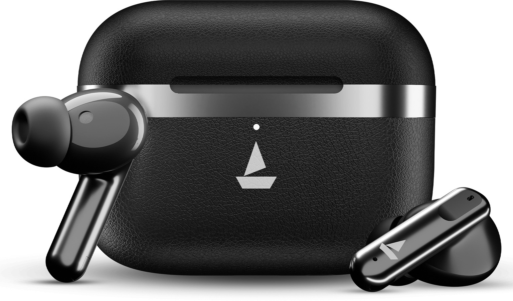
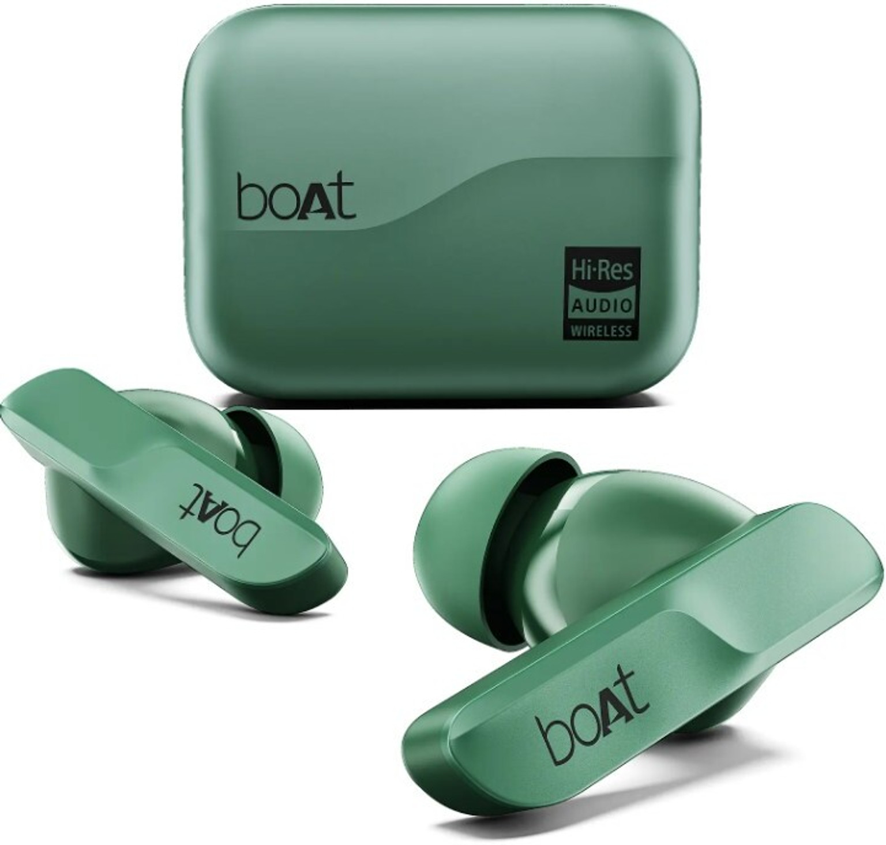
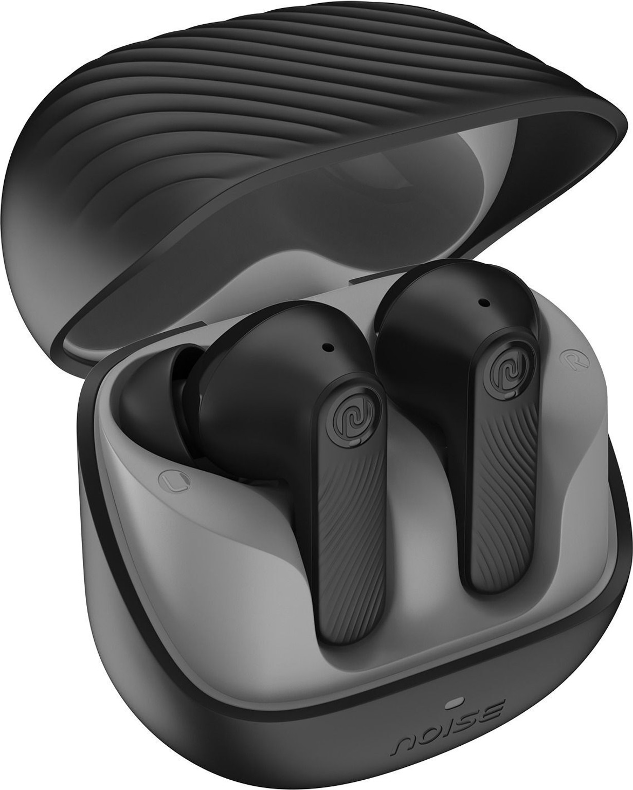
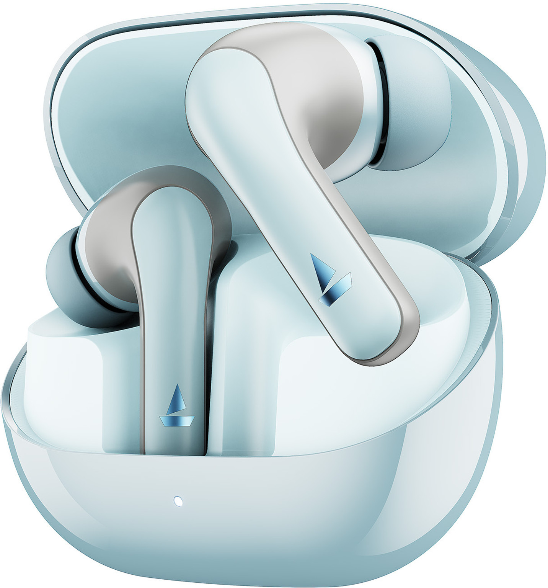
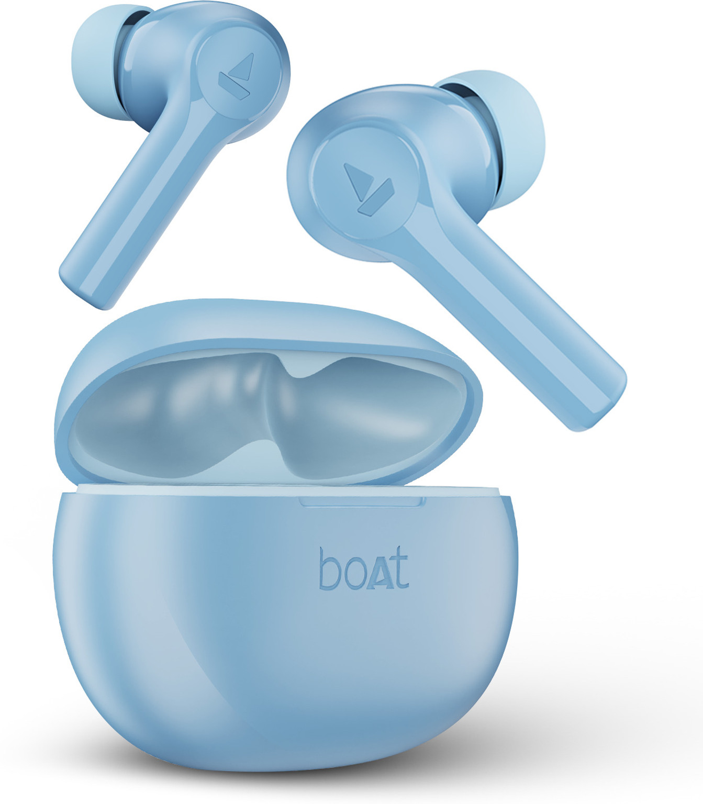
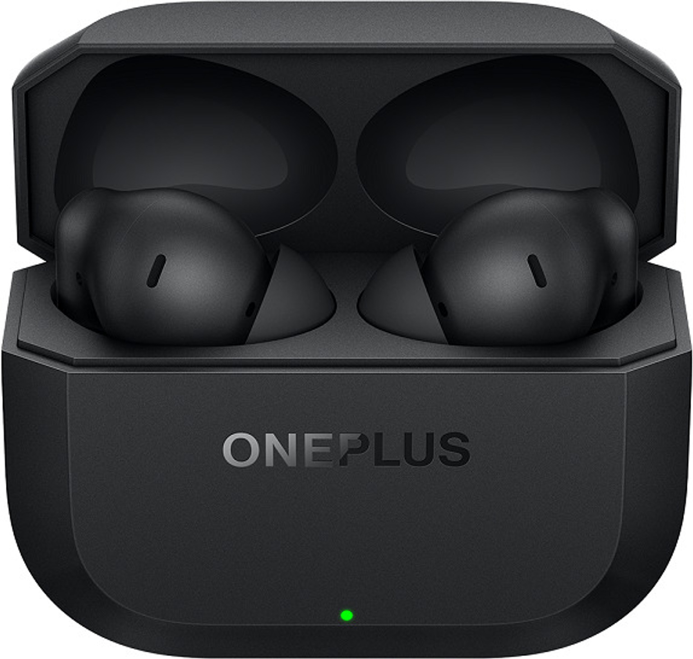

Introduction: Finding the Best Budget Earbuds
Are you looking for great sounding earbuds without breaking the bank? You're not alone. Many students and professionals want quality audio on a budget, but finding the right pair can be challenging with so many options available.
In this guide, we've tested and reviewed the best earbuds under ₹2000 that deliver excellent sound quality, comfortable fit, and reliable battery life. Whether you need them for studying, working from home, or entertainment, we've got the perfect option for you.
📌 Pinterest Optimized Image: Best Earbuds Under 2000 Comparison
1. boAt Airpods 161 / 163

boAt Airpods 161 / 163
₹999Key Features:
- ✓ Up to 17 hours total battery life
- ✓ 10mm Dynamic Drivers for deep bass
- ✓ ASAP Fast Charging (10 min charge = 3 hours playback)
- ✓ IWP™ Instant Wake N Pair Technology
- ✓ IPX4 Water & Sweat Resistant
Pros & Cons:
✓ Pros
- Very affordable price
- Powerful bass sound
- Fast charging support
- Lightweight and comfortable
✗ Cons
- No active noise cancellation
- Average microphone quality
- Battery life could be better
1. boAt Airdopes 181 Pro

boAt Airdopes 181 Pro
₹1,399The boAt Airdopes 181 Pro is a powerful pair of true wireless earbuds designed for users who want massive battery life and immersive sound. It features 10mm drivers that deliver boAt’s signature bass-heavy sound along with Bluetooth 5.3 connectivity for a stable connection. With an impressive 100 hours of total playback, quad-mic ENx™ technology for clear calls, and BEAST™ low-latency gaming mode, these earbuds are perfect for music, calls, gaming, and daily use.
Key Features:
- ✓ Up to 100 hours total battery life
- ✓ 10mm Dynamic Drivers for deep bass
- ✓ Quad Mic with ENx™ noise cancellation
- ✓ BEAST™ Mode with 50ms low latency
- ✓ IPX5 Water & Sweat Resistant
Pros & Cons:
✓ Pros
- Extremely long battery backup
- Powerful bass performance
- Great for gaming with low latency
- Fast ASAP charging support
✗ Cons
- No active noise cancellation
- Case is slightly bulky
- Average touch control customization
1. boAt Airdopes Prime 513

boAt Airdopes Prime 513
₹1,599The boAt Airdopes Prime 513 is a premium pair of true wireless earbuds designed for users who want powerful sound, active noise cancellation, and long battery life. It features 13mm dynamic drivers that deliver boAt’s signature deep bass and immersive audio. With up to 65 hours of total playback, Bluetooth connectivity, and quad-mic AI-ENx technology for clear calls, these earbuds are ideal for music, gaming, and everyday use.
Key Features:
- ✓ Up to 65 hours total battery life
- ✓ 13mm Dynamic Drivers for powerful bass
- ✓ 32dB Active Noise Cancellation
- ✓ Quad Mic with AI-ENx call noise cancellation
- ✓ BEAST™ Mode for low-latency gaming
Pros & Cons:
✓ Pros
- Active noise cancellation support
- Very long battery backup
- Powerful bass performance
- Good call quality with quad mics
✗ Cons
- Case is slightly bulky
- ANC performance is basic
- Touch controls may feel sensitive
1. boAt Airdopes 800

boAt Airdopes 800
₹1,899The boAt Airdopes 800 is a feature-rich pair of true wireless earbuds designed for users who want immersive sound and premium features at an affordable price. It comes with powerful 13mm dynamic drivers that deliver deep bass and balanced audio. With Dolby Audio support, Bluetooth 5.3 connectivity, and up to 40 hours of total playback, these earbuds provide a great experience for music, calls, and gaming.
Key Features:
- ✓ Up to 40 hours total battery life
- ✓ 13mm Dynamic Drivers for powerful bass
- ✓ Dolby Audio support
- ✓ Quad Mic with AI-ENx noise cancellation
- ✓ IPX5 Water & Sweat Resistant
Pros & Cons:
✓ Pros
- Dolby Audio for immersive sound
- Long battery backup
- Clear calls with quad mics
- Low latency gaming mode
✗ Cons
- No active noise cancellation
- Case is slightly bulky
- Touch controls may feel sensitive
1. Noise Buds X2

Noise Buds X2
₹1,599The Noise Buds X2 is a feature-packed pair of true wireless earbuds designed for users who want premium features like Active Noise Cancellation and extremely long battery life. It comes with 10mm dynamic drivers that deliver deep bass and immersive audio. With Bluetooth 5.3 connectivity, quad-mic ENC for clear calls, and an impressive battery life of up to 140 hours with the charging case, these earbuds are ideal for music, calls, gaming, and long daily use.
Key Features:
- ✓ Up to 140 hours total battery life
- ✓ 10mm Dynamic Drivers for deep bass
- ✓ Active Noise Cancellation up to 32dB
- ✓ Quad Mic with Environmental Noise Cancellation
- ✓ Bluetooth 5.3 with Dual Device Pairing
Pros & Cons:
✓ Pros
- Massive battery backup
- Active Noise Cancellation support
- Clear calls with quad microphones
- Stable Bluetooth connectivity
✗ Cons
- Charging case is slightly bulky
- ANC performance is basic
- Touch controls may feel sensitive
1. boAt Airdopes 131 Pro

boAt Airdopes 131 Pro
₹1,099The boAt Airdopes 131 Pro is a powerful pair of true wireless earbuds designed for music lovers and gamers. It features large 11mm dynamic drivers that deliver deep bass and clear audio for an immersive listening experience. With Bluetooth 5.3 connectivity, ENx™ noise cancellation technology for clearer calls, and BEAST™ low-latency gaming mode, these earbuds are perfect for music, movies, and gaming sessions. The earbuds also offer long battery life and IPX5 water resistance, making them ideal for daily use and workouts.
Key Features:
- ✓ Up to 45–55 hours total battery life
- ✓ 11mm Dynamic Drivers for deep bass
- ✓ ENx™ Noise Cancellation for clearer calls
- ✓ BEAST™ Mode for low-latency gaming
- ✓ Bluetooth 5.3 with IPX5 water resistance
Pros & Cons:
✓ Pros
- Strong bass and loud sound
- Low-latency gaming mode
- Long battery backup
- Stable Bluetooth 5.3 connectivity
✗ Cons
- No active noise cancellation
- Touch controls can be sensitive
- Plastic build quality
1. boAt Airdopes Supreme

boAt Airdopes Supreme
₹1,399The boAt Airdopes Supreme is a powerful pair of true wireless earbuds designed for music lovers and gamers. It features 10mm dynamic drivers that deliver deep bass and clear audio for an immersive listening experience. With Bluetooth 5.2 connectivity, AI ENx™ noise cancellation technology for clearer calls, and BEAST™ low-latency gaming mode, these earbuds are perfect for music, movies, and gaming sessions. The earbuds also offer long battery life and IPX4 water resistance, making them ideal for daily use and workouts.
Key Features:
- ✓ Up to 50 hours total battery life
- ✓ 10mm Dynamic Drivers for deep bass
- ✓ AI ENx™ Noise Cancellation for clearer calls
- ✓ BEAST™ Mode for low-latency gaming
- ✓ Bluetooth 5.2 with IPX4 water resistance
Pros & Cons:
✓ Pros
- Strong bass and clear sound
- Low-latency gaming mode
- Long battery backup
- Stable Bluetooth connectivity
✗ Cons
- No active noise cancellation
- Touch controls can be sensitive
- Average mic in very noisy places
1. OnePlus Nord Buds 3r

OnePlus Nord Buds 3r
₹1,599The OnePlus Nord Buds 3r are stylish true wireless earbuds designed for powerful sound and smooth connectivity. They feature large 12.4mm dynamic drivers that deliver deep bass and balanced audio for music, movies, and gaming. With Bluetooth 5.3 connectivity and AI noise reduction for calls, these earbuds provide stable performance and clear voice quality. The earbuds also support fast charging and offer long battery life, making them a great choice for daily use, workouts, and travel.
Key Features:
- ✓ Up to 38 hours total battery life
- ✓ 12.4mm Dynamic Drivers for powerful bass
- ✓ AI Noise Reduction for clear calls
- ✓ Fast charging support
- ✓ Bluetooth 5.3 with IP55 water resistance
Pros & Cons:
✓ Pros
- Powerful bass and clear sound
- Comfortable and stylish design
- Stable Bluetooth 5.3 connection
- Good battery backup
✗ Cons
- No wireless charging
- No multipoint connectivity
- Limited touch customization
Comparison Table: Best Earbuds Under ₹2000
| Model | Price | Battery Life | ANC | Water Resistant | Best For |
|---|---|---|---|---|---|
| Realme Buds Air 3 Neo | ₹1,299 | 32 hours | ❌ | IPX4 | Battery Life |
| JBL Tune 660NC | ₹1,799 | 44 hours | ✓ | ✓ | Noise Cancellation |
| boAt Airdopes 131 | ₹999 | 8 hours | ❌ | IPX5 | Budget |
| Soundcore Space A40 | ₹1,899 | 50 hours | ✓ | ✓ | Premium Features |
| OPPO Enco Buds 2 | ₹1,599 | 11 hours | ⚡ (Calls) | IP54 | Balanced Option |
Conclusion: Which Earbuds Should You Buy?
Best Overall: Soundcore Space A40 - If you want the best overall experience with great noise cancellation, excellent sound quality, and outstanding battery life, the Soundcore Space A40 is worth the extra investment at ₹1,899.
Best Budget Option: boAt Airdopes 131 - For students on a tight budget, the boAt Airdopes 131 at ₹999 offers great value with decent sound quality and water resistance. You can't beat the price.
Best Battery Life: JBL Tune 660NC - If battery life is your priority, the JBL Tune 660NC delivers an incredible 44 hours with its charging case, perfect for long trips and work sessions.
All five options are excellent choices under ₹2000. Your final decision should depend on your priorities: budget, battery life, noise cancellation, or overall sound quality. Whichever you choose, you'll get great value for your money.